Malware (Software Malicioso)
El malware es un término general para software diseñado para causar daño. Incluye virus, troyanos, ransomware, spyware, entre otros.
Herramientas de ataques
Emotet: El troyano bancario Emotet fue identificado por primera vez por investigadores de seguridad en 2014. Emotet fue diseñado originalmente como un malware bancario que intentaba colarse en el ordenador y robar información sensible y privada.
Nota importante: Al hacer clic en la imagen, serás dirigido al tema relacionado.
TrickBot: Los ransomwares son programas maliciosos, cuya función es encriptar los archivos más importantes del ordenador de una víctima y cobrar una suma de dinero como rescate para recibir la clave de descifrado.
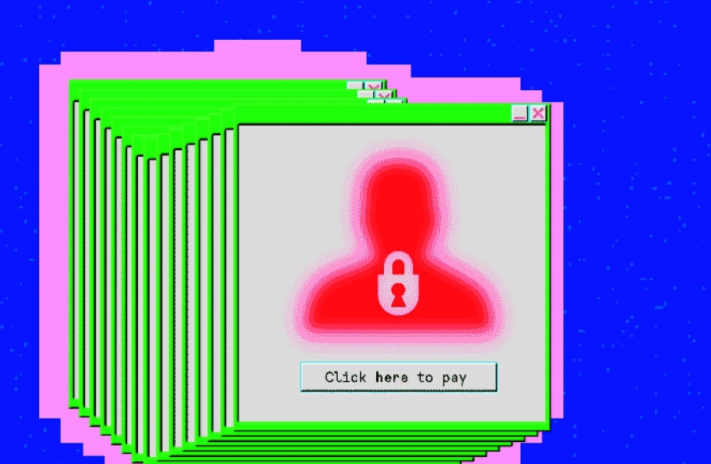
WannaCry: Es un ejemplo de ransomware de cifrado, un tipo de software malicioso (malware) que los cibercriminales utilizan a fin de extorsionar a un usuario para que pague
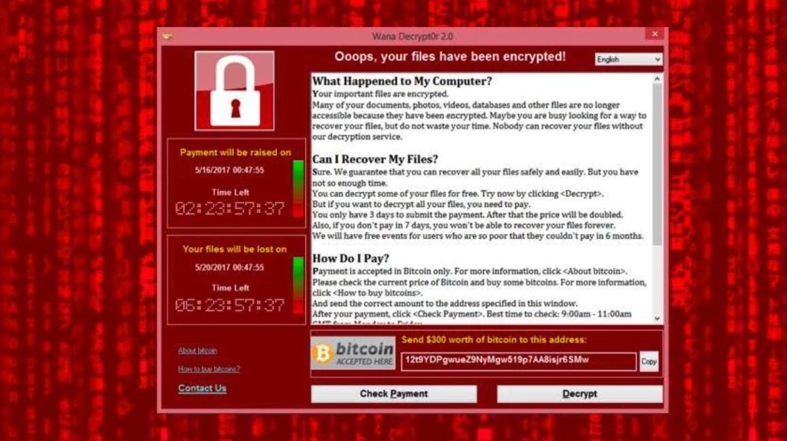
herramientas de defensas
Antivirus (Norton, Bitdefender): Actúa contra todas las amenazas digitales, desde virus, gusanos y troyanos, hasta ransomware, exploits de día cero, rootkits y spyware.
Es un ejemplo de ransomware de cifrado, un tipo de software malicioso (malware) que los cibercriminales utilizan a fin de extorsionar a un usuario para que pague.
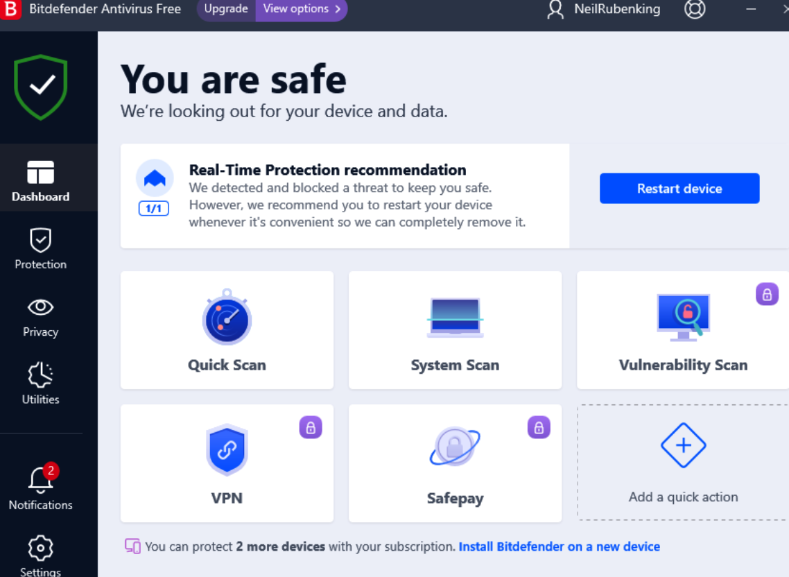
Firewalls: Es una solución de seguridad de redes que protege su red del tráfico no deseado.
Sistemas de detección de intrusos (IDS): Es una herramienta de seguridad de red que monitoriza el tráfico y los dispositivos de la red en busca de actividades maliciosas conocidas.
Ransomware
Tipo de malware que cifra los archivos de la víctima y exige un rescate para restaurar el acceso.
Herramienta de ataques
Revil: El virus suele distribuirse por medio de técnicas de phishing, que engañan a los usuarios para que abran archivos maliciosos camuflados como archivos adjuntos de correo electrónico, documentos y hojas de cálculo.
LockBit: Es una subclase de ransomware conocido como «virus de cifrado» que exige como rescate el pago de dinero a cambio de descifrar archivos.
Se centra más en las empresas y organizaciones gubernamentales y no tanto en los particulares.
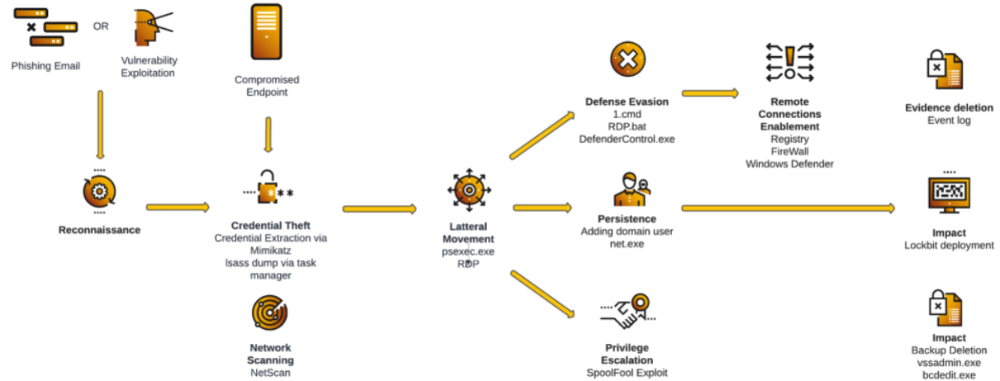
DarkSide: Es utilizado para atacar a múltiples organizaciones grandes y de altos ingresos.
Los atacantes utilizan el cifrado y el robo de datos confidenciales, y amenazan a estas entidades a cambio del pago de una la demanda de rescate.
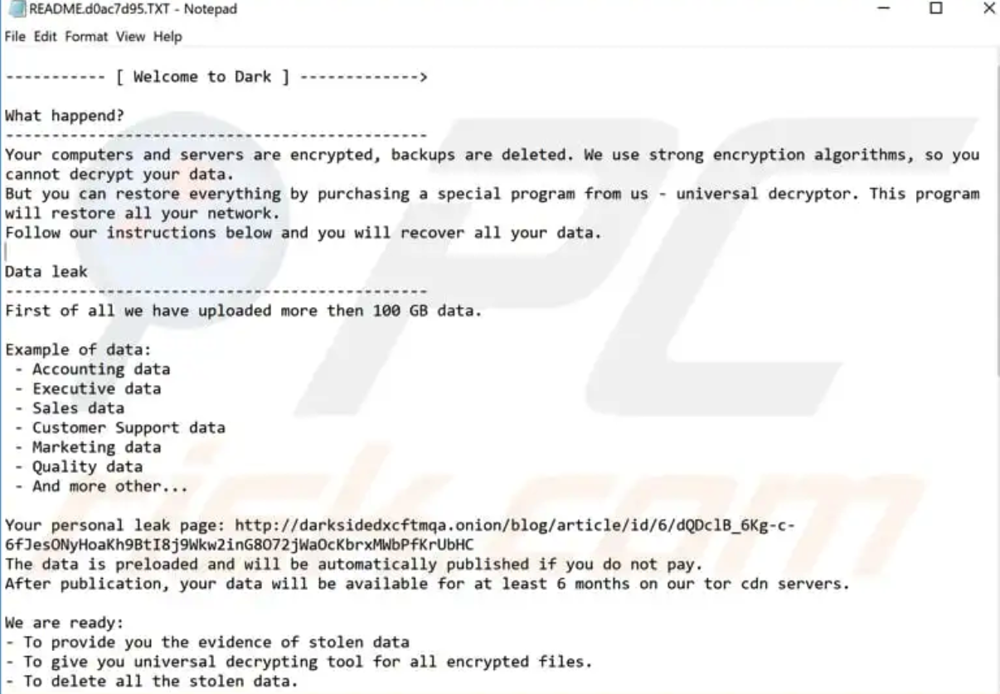
Herramientas de defensas
EDR (Endpoint Detection and Response): Es un tipo de solución de ciberseguridad diseñada para monitorizar, detectar y responder actividades malintencionadas en endpoints de una organización (también conocidos como puntos finales de contacto).
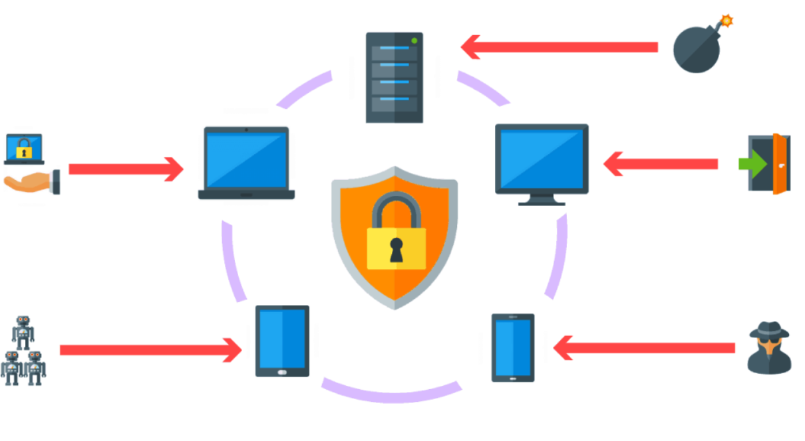
Phishing
< class="text">Táctica de ingeniería social en la que los atacantes se hacen pasar por entidades confiables para obtener información confidencial.
Herramienta de ataques
Kits de phishing como Evilginx2: Siendo un man-in-the-middle, captura no solo los nombres de usuario y las contraseñas, sino que también captura los tokens de autenticación enviados como cookies. Los tokens de autenticación capturados permiten al atacante eludir cualquier forma de 2FA habilitada en la cuenta del usuario (excepto U2F).
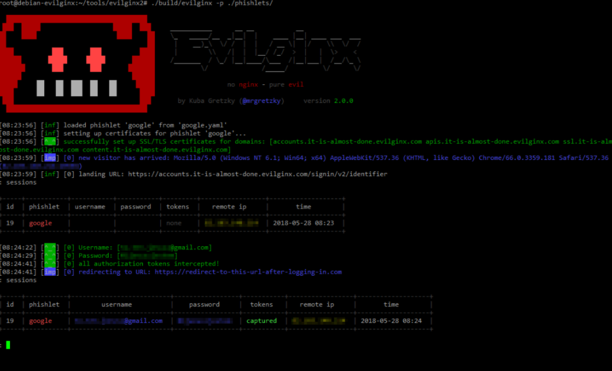
Gophish: Es una plataforma gratuita y de código abierto diseñada especialmente para facilitar la formación de terceras personas en cuanto a seguridad.
Gracias a esta herramienta vamos a poder lanzar campañas de phishing simuladas y monitorizadas y analizar los resultados según aquellas que hayan tenido éxito y las que no, teniendo una idea más clara de hacia dónde enfocar una posible formación adicional.
Se centra más en las empresas y organizaciones gubernamentales y no tanto en los particulares.
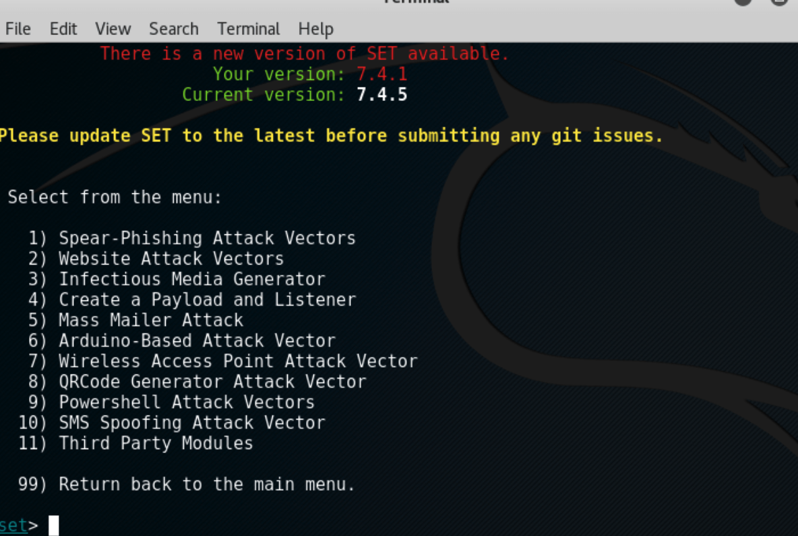
Herramientas de defensas
Autenticación multifactor (MFA): Es crear una defensa en capas que dificulte que una persona no autorizada acceda a un objetivo, como una ubicación física, un dispositivo informático, una red o una base de datos.
Si un factor se ve comprometido o roto, el atacante todavía tiene al menos una o más barreras que romper antes de entrar con éxito en el objetivo.
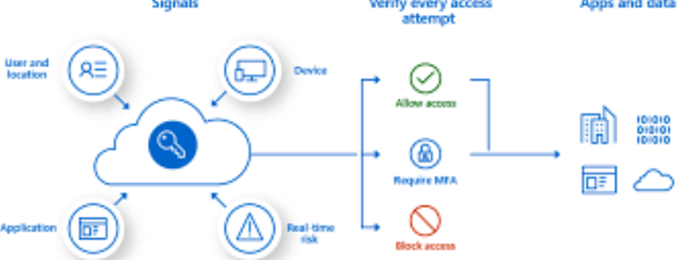
Filtros de correo electrónico (SpamAssassin) correo electrónico entrante es escaneado, y los mensajes dirigidos a los usuarios son clasificados en diversas categorías.
Entre ellas se encuentran (sin carácter restrictivo): “correo no deseado”, “contenido adulto”, “envíos masivos”, “virus”, “impostores” y otras.
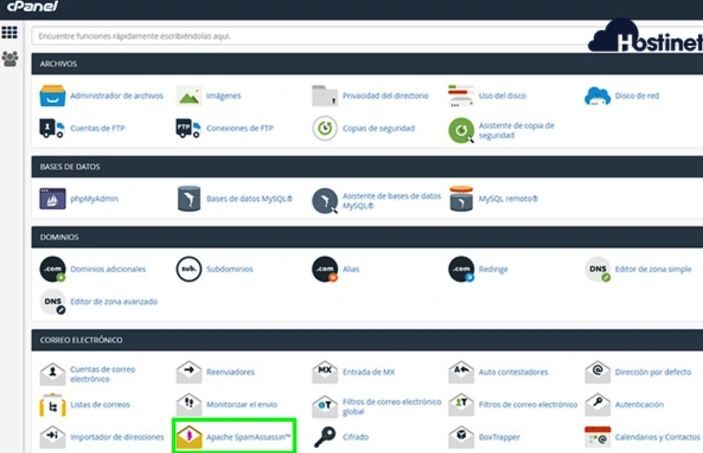
Formación en concienciación sobre phishing: La formación para la concienciación sobre el phishing es la educación continua que se imparte a los empleados para que comprendan cómo funciona el phishing, cómo detectar los signos reveladores de un ataque y qué acciones seguras deben tomar cuando se sientan atacados
Ataques de Denegación de Servicio Distribuidos (DDoS)
Táctica de ingeniería social en la que los atacantes se hacen pasar por entidades confiables para obtener información confidencial.
Herramientas de ataques
LOIC (Low Orbit Ion Cannon): Es una herramienta que se suele utilizar para lanzar ataques DOS Fue desarrollado originalmente por Praetox Technology como una aplicación prueba de estrés de la red, pero ahora es de código abierto y se utiliza sobre todo con fines maliciosos.
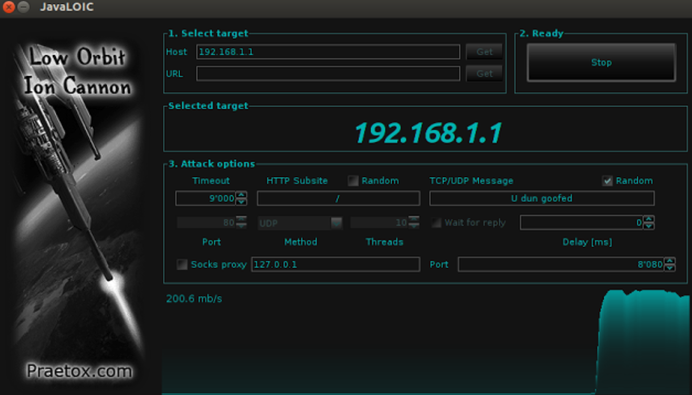
HOIC (High Orbit Ion Cannon): Es una popular herramienta utilizada para lanzar ataques DoS y DDoS, cuyo objetivo es inundar la red de una víctima con tráfico web y desconectar un sitio o servicio web.
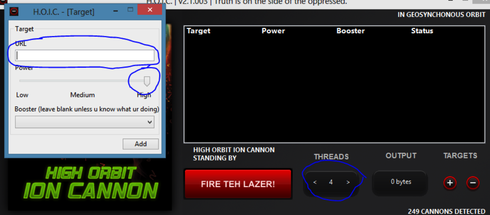
Mirai Botnet: Es un malware que infecta dispositivos inteligentes que funcionan con procesadores ARC, convirtiéndolos en una red de bot controlados a distancia o «zombies». Esta red de bots, llamada botnet, se suele utilizar para lanzar ataques DDoS.
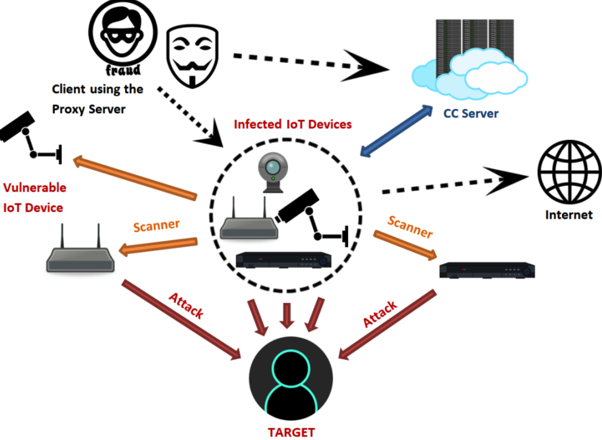
Herramientas de defensas
Cloudflare: Es un proveedor de servicios de infraestructura de seguridad web que se acopla a tu hosting y te ofrece una variedad de productos diseñados para mejorar el rendimiento y la seguridad de tu sitio web.
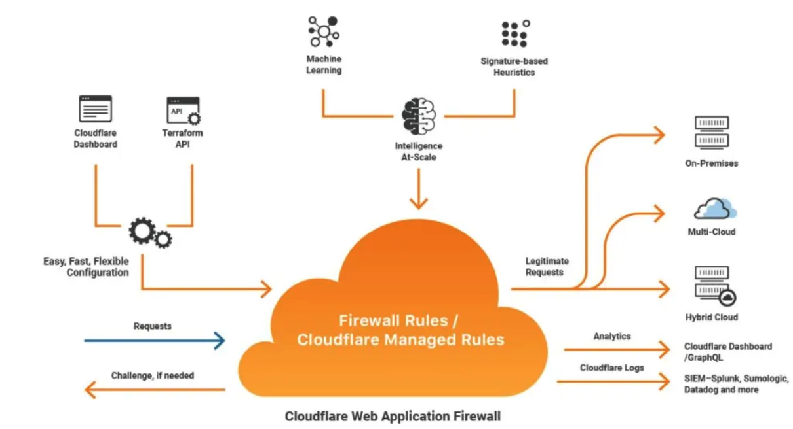
Akamai: Protege toda la infraestructura web y de las API mediante un conjunto integral de eficaces protecciones.
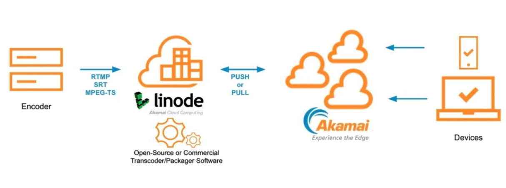
Exploits de vulnerabilidades del software
Los atacantes explotan vulnerabilidades no parcheadas en software o sistemas operativos.
Herramientas de ataques
Metasploit: Es unframework de código abierto utilizado principalmente para realizar pruebas de penetración y desarrollar y ejecutar exploits.
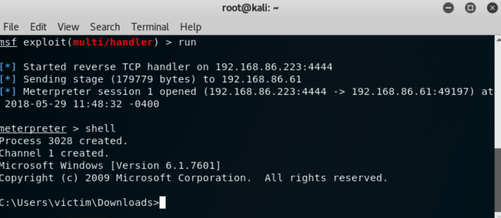
ExploitDB: Es un programa o fragmento de código diseñado para encontrar y aprovechar un fallo o vulnerabilidad de seguridad en una aplicación o sistema informático, generalmente con fines maliciosos, como instalar malware
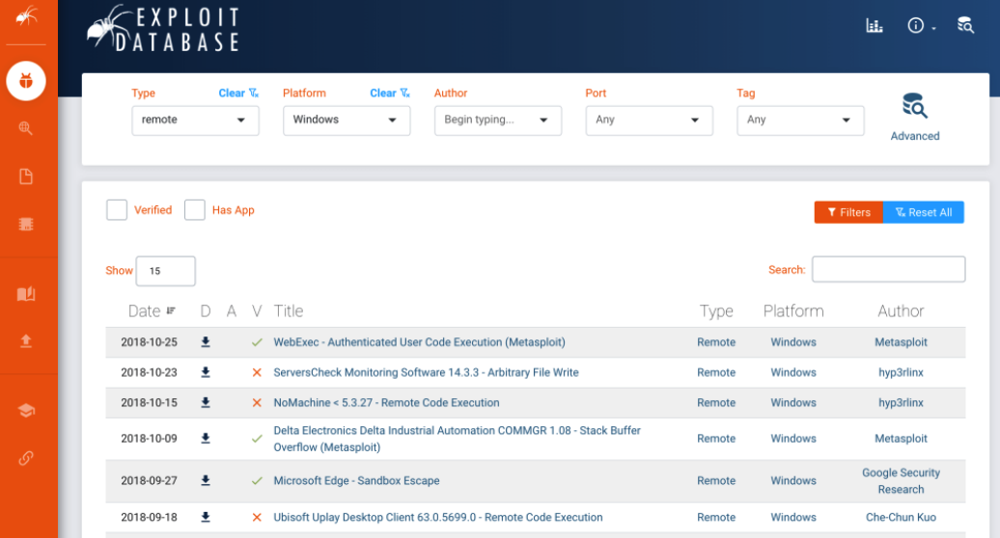
Herramientas de defensas
Actualizaciones y parches regulares: Es una pieza de software que corrige una o más vulnerabilidades de un software.
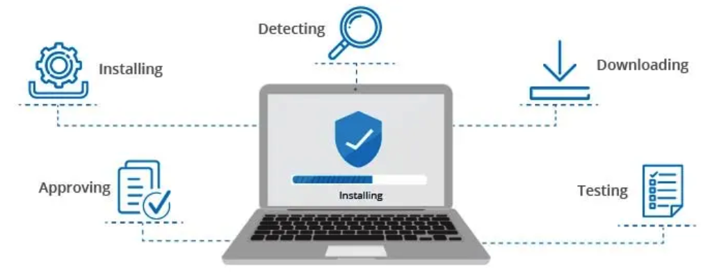
Escaneo de vulnerabilidades (Nessus, OpenVAS): Realizan un análisis automatizado en busca de debilidades explotables dentro de la aplicación, el terminal y la infraestructura de TI de una organización.
Realizar estos análisis de vulnerabilidades es un requisito común para el cumplimiento normativo y puede ayudar a minimizar el riesgo de ciberseguridad de una organización.
Como resultado, debería ser un componente central del programa de gestión de amenazas de una organización.
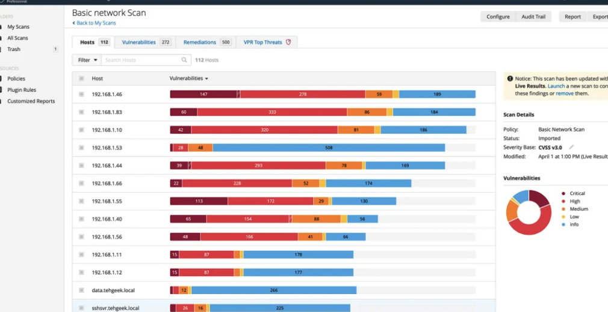
Ataques Man-in-the-Middle (MitM)
Los atacantes interceptan y alteran la comunicación entre dos partes sin que estas lo sepan.
Herramientas de ataques
Ettercap: Es un sniffer/interceptor/logger para redes LAN con switchs, que soporta la disección activa y pasiva de muchos protocolos (incluso cifrados) e incluye muchas características para el análisis de la red y del host (anfitrión).
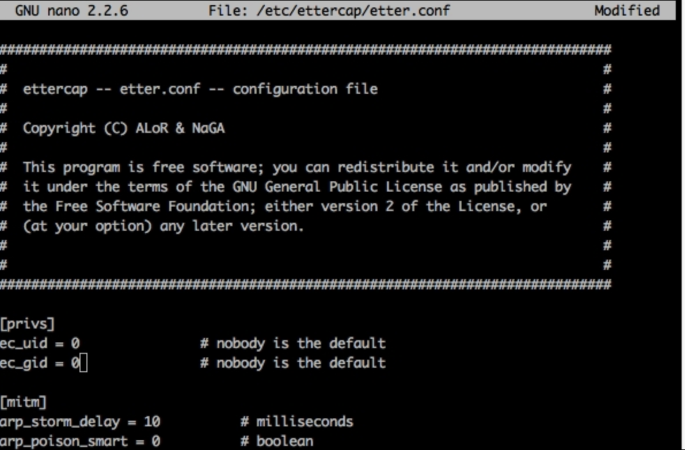
Wireshark (para capturar paquetes): Es una herramienta para capturar y analizar paquetes en una red.
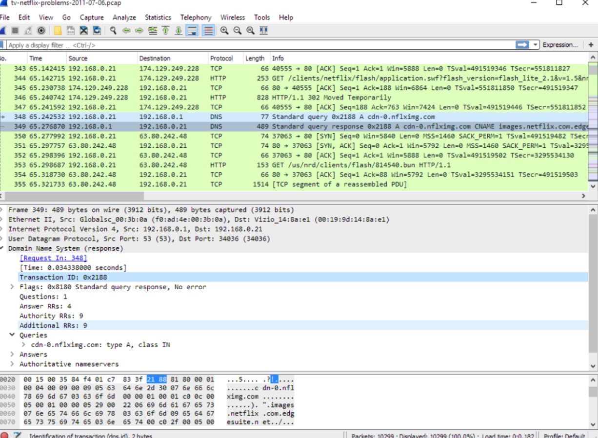
SSLStrip: Consiste en redirigir el tráfico del usuario para descifrar sus comunicaciones.
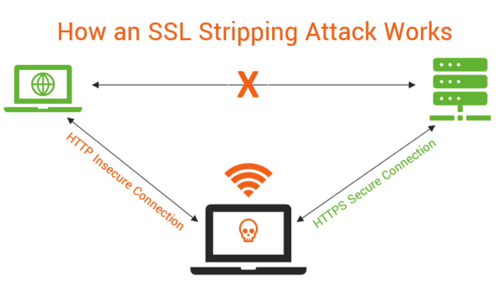
Herramientas de defensas
Uso de HTTPS: Está encriptado para aumentar la seguridad de las transferencias de datos.
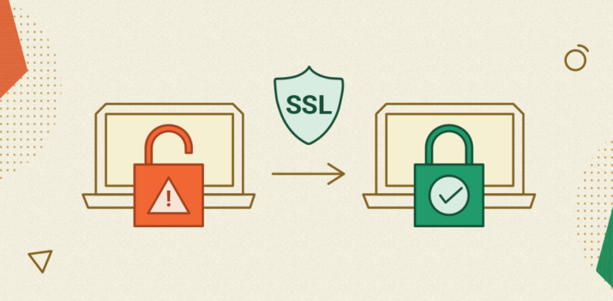
VPN: Describe la oportunidad de establecer una conexión protegida al utilizar redes públicas.
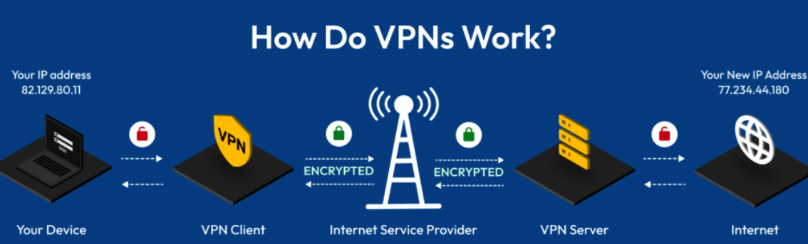
Inyección SQL
Técnica de ataque en la que los atacantes insertan código SQL malicioso en una consulta para manipular bases de datos.
Herramientas de ataques
SQLmap: Es una herramienta de código abierto que permite automatizar el proceso de un ataque de inyección de SQL
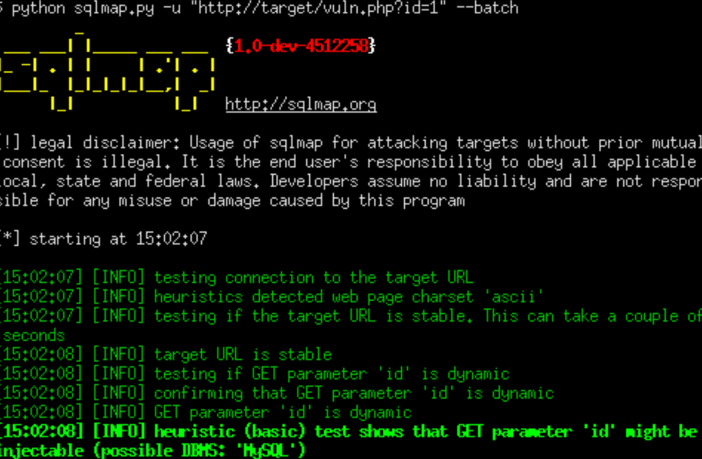
Havij:Es una herramienta que nos facilitará la explotación de vulnerabilidades de inyección SQL en aplicaciones web.
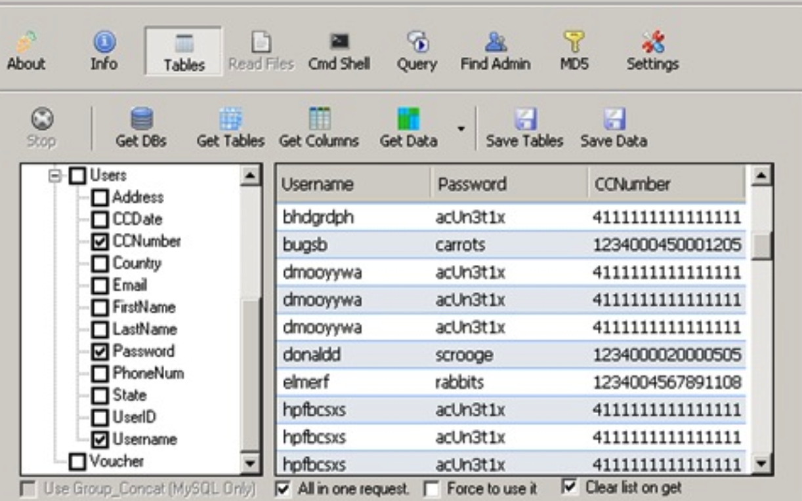
Herramientas de defensas
Validación de entradas: Es el proceso de garantizar que los datos ingresados en un sistema cumplan con criterios o estándares específicos antes de ser procesados o almacenados..
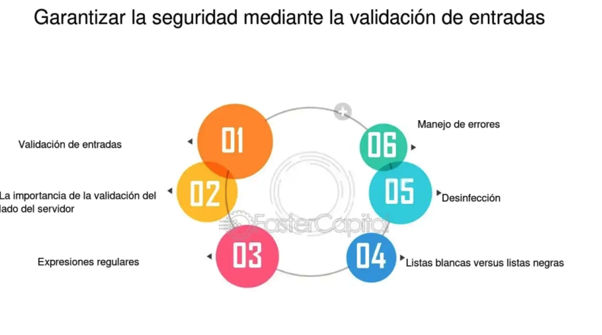
WAF (Web Application Firewalls): Los firewalls de aplicaciones web ayudan a proteger las aplicaciones implementadas en la nube pública, en entornos locales y en entornos con controles de acceso basados en datos de geolocalización, direcciones IP en la lista blanca y en la lista negra, el localizador uniforme de recursos de protocolo de transferencia de hipertexto (URL de HTTP) y el encabezado HTTP.
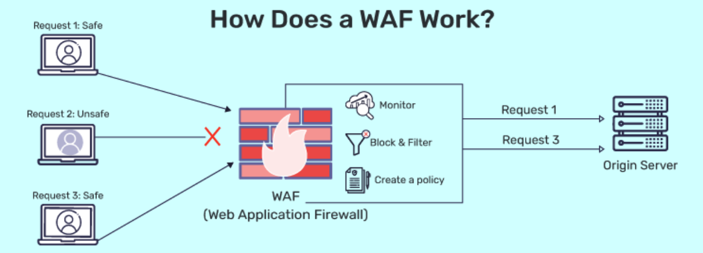
Robo de credenciales
Los atacantes obtienen credenciales de usuarios a través de phishing, keyloggers o violaciones de datos.
Herramientas de ataques
Keyloggers: Están diseñados para generan registros de todo lo que escribes con el teclado el de una computadora o un dispositivo móvil.
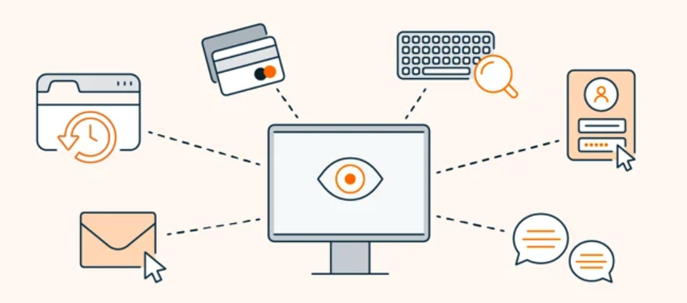
Mimikatz (para robar credenciales en memoria): Es una herramienta para Windows que permite extraer las contraseñas de inicio de sesión, tickets de kerberos, hashes NTLM y certificados en Windows.
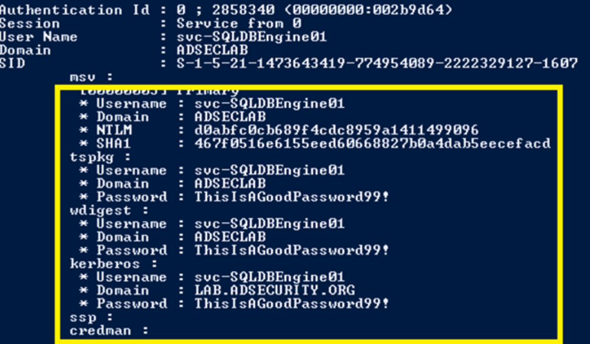
Herramientas de defensas
Administradores de contraseñas (LastPass, Bitwarden): Facilita a empresas y particulares generar, almacenar y compartir contraseñas de forma segura desde cualquier lugar, navegador o dispositivos.
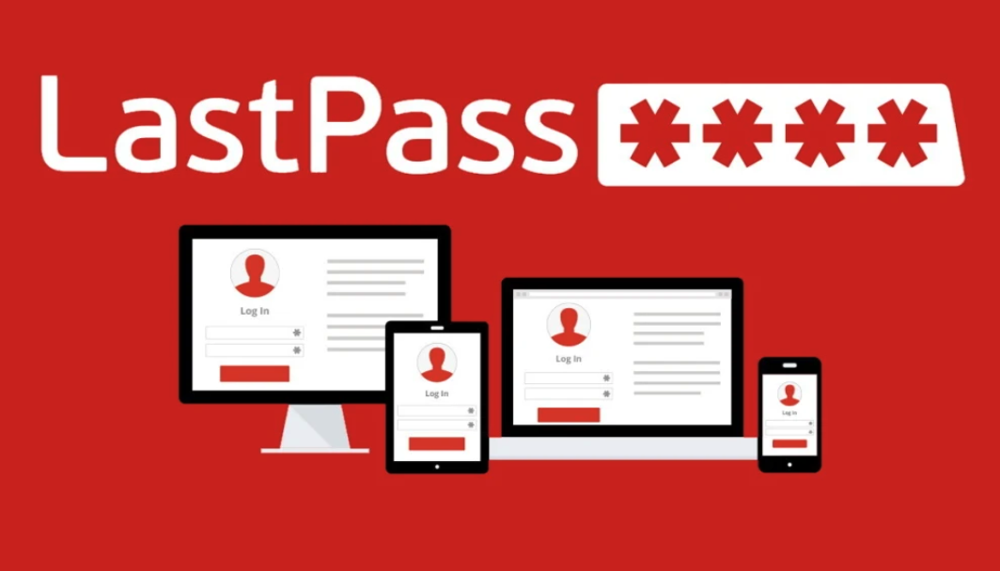
Autenticación multifactor (MFA): La autenticación es un proceso de registro en varios pasos que requiere que los usuarios ingresen algo más de información que simplemente una contraseña. Por ejemplo, junto con la contraseña, los usuarios deberán ingresar un código que se envía a su correo electrónico, responder a una pregunta secreta o escanear una huella dactilar.
Ataques de día cero (Zero-Day)
Los atacantes explotan vulnerabilidades desconocidas por el proveedor o desarrollador del software.
Herramientas de ataques
Kits de exploits personalizados: Es un tipo de software malicioso diseñado para buscar y explotar automáticamente vulnerabilidades de software informático.
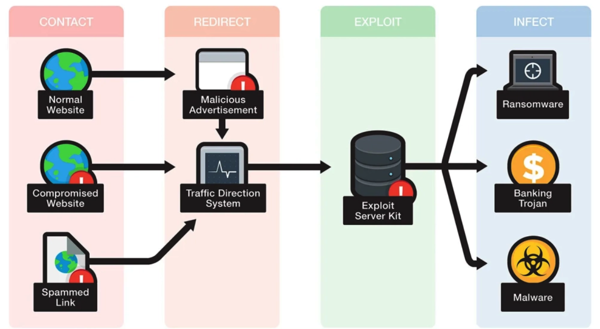
Herramientas de reconocimiento (Shodan): Se lo conoce como el motor de búsqueda de los hackers, con el objetivo de realizar tareas de investigación de nuevas vulnerabilidades.
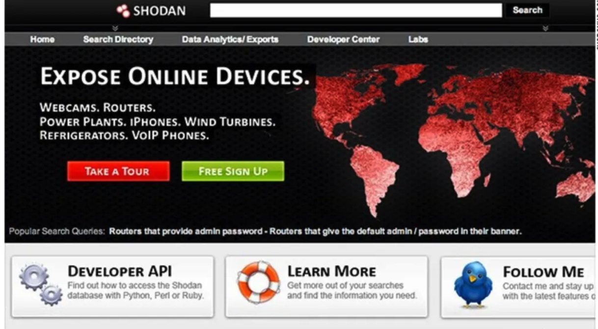
Herramientas de defensas
Monitoreo de amenazas: El monitoreo de amenazas es una práctica crítica de ciberseguridad que implica la observación y el análisis continuo de entornos de red y puntos finales para detectar, identificar y responder a posibles amenazas a la seguridad.
Programas de recompensas de bugs (Bug Bounty): Estas ofrecen recompensas monetarias de miles (o incluso millones) de dólares para motivar a los mejores hackers éticos, desarrolladores o cualquier persona con aptitudes a encontrar fallas.
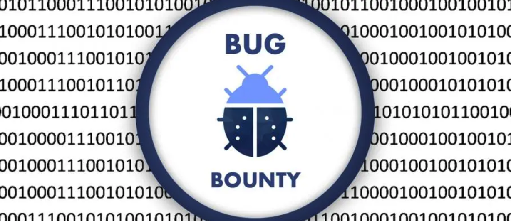
ILOVE YOU - Virus
El virus ILOVEYOU llegó a millones de usuarios a través de un correo electrónico con el asunto «ILOVEYOU» y un archivo adjunto llamado «LOVE-LETTER-FOR-YOU.txt.vbs».
Acerca del virus: LOVE-LETTER-FOR-YOU. TXT.vbs
Herramientas de defensas
Antivirus prácticas seguras de navegación:Actualizar el software y Las actualizaciones de los distintos aparatos electrónicos ayudan a que se ejecuten también los últimos parches de seguridad y protección. Aunque algunos lo hagan automáticamente, otros están configurados para hacerlo de forma manual. Lo más seguro es descargar el software solo desde las páginas oficiales.
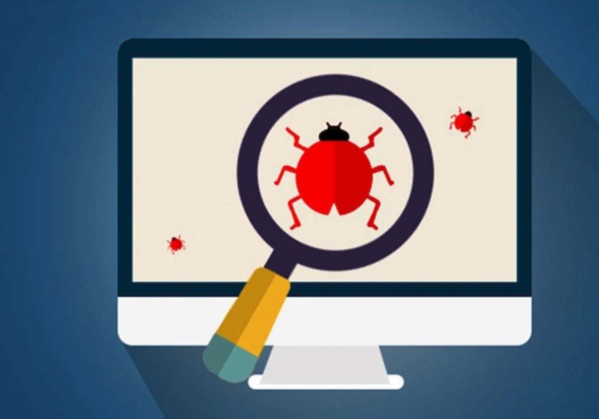
Copias de seguridad: Activa la función de copias de seguridad automáticas para salvaguardar toda aquella información o documentos que almacenas en tus dispositivos. De esta forma, en caso de sufrir un ataque cibernético siempre podrás recuperar tus datos.
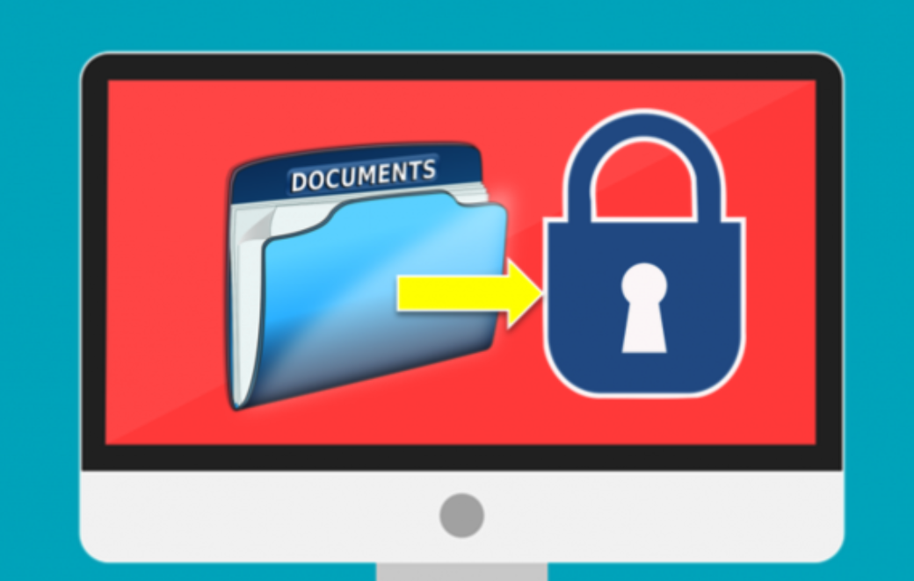
Pagos Online: Intenta utilizar una tarjeta de pagos online o plataformas como PayPal. Entre sus múltiples ventajas, la garantía de cliente nos asegurará que nos devuelvan el dinero si es una estafa o si hay algún tipo de problema con nuestra compra.
.